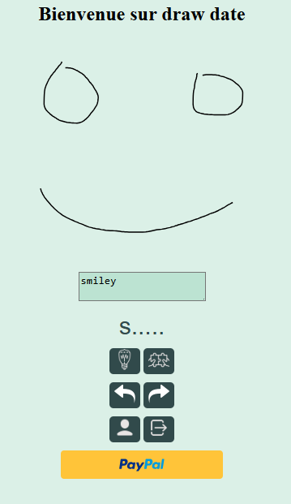
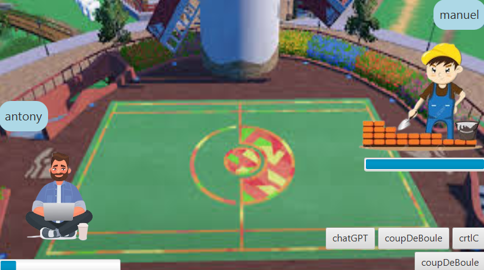

Il s’agit d’une application de rencontre où l'on match en trouvant la description du dessin. On peut ensuite envoyer des messages ou des dessins à la personne. Il y a un système de superMatch pour les utilisateurs premium via paypal.
Il s’agit d’une application pour l’entreprise DWS qui permet de dessiner à la main sur une tablette et qui convertit le dessin en svg pour être ensuite gravé sur des produits de luxe à l’aide d’un laser.
Jeu en java style pokémon en le programmant, j’ai appris la POO, l’encapsulation, l’héritage, le polymorphisme, les constructeurs, la modularité.
Il s’agit d’un gestionnaire de magasin en php qui gère les produits, commande, utilisateurs dans une base de données selon la méthode CRUD (create, read, update, delete), l’utilisateur peut se connecter avec un token généré par l’application.
Lors d’une game jam, j’ai créé un jeu à l’aide de phaser JS, il s’agit d’un jeu, style space invader qui avec un chat magicien qui lance des sorts sur des fantômes. Lien vers le jeu : https://dylserker.itch.io/glitch-hunters

Il s’agit d’un algorithme en C qui trouve le plus court chemin entre un noeud de départ et un noeud d’arrivé en prennant compte les liens entre chaque noeud. grâce à ce projet je maitrise les graphe, les pointeurs, la mémoire dynamique, le débogage, la gestion des cas limites, des exceptions et des erreurs.